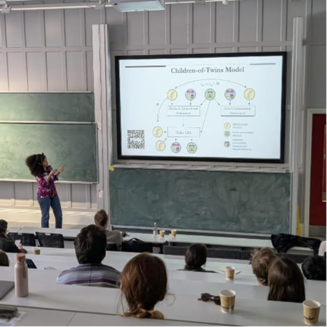
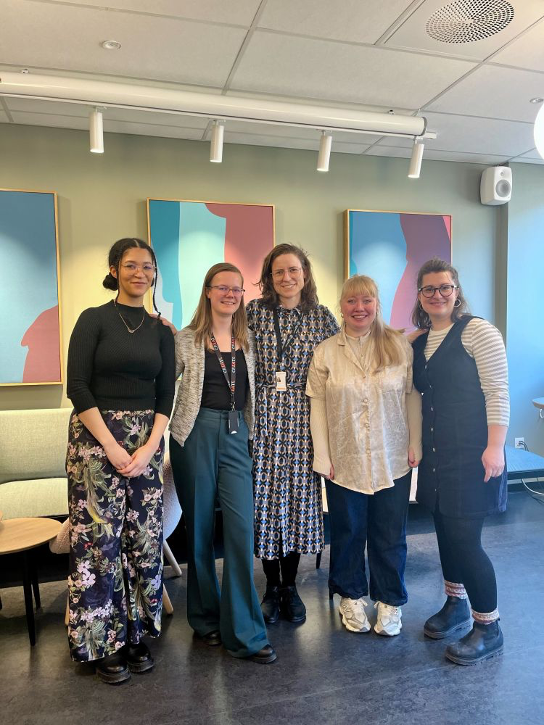
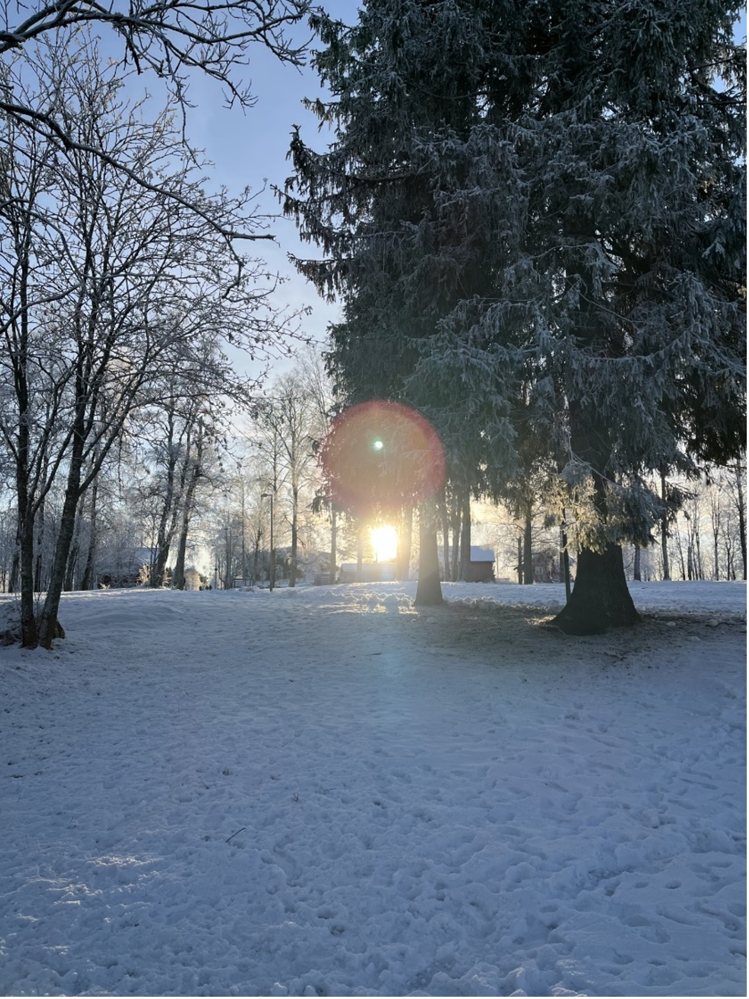

Intergenerational Transmission of School Grades – Insights from My Research Stay in Oslo
September 18, 2025
My name is Josefina Bernardo and I am a PhD candidate in the department of Biological Psychology at the Faculty of Behavioural and Movement Sciences. From November 2024 to April 2025, I had the opportunity to complete a research stay at the Norwegian Institute for Public Health (NIPH) in Oslo, Norway, which was very kindly supported by the FGB Travel Fund.
I conducted a study in behavioural genetics that examined the intergenerational transmission of educational outcomes – that is, why education tends to run in families. At the Centre for Fertility and Health of the NIPH, I learned more about statistical methods to model intergenerational transmission and applied them to data from the Norwegian population register.
Our work culminated in a study titled: ‘The role of parental educational attainment in children’s school performance: A Children-of-Twins-and-Siblings Study of GPA at age 16’,which I am currently finalizing. In the following post, I would like to summarize some findings from my research stay and share professional and personal insights I gained during my time in Oslo.
The Study
We know that parents and their children have similar educational outcomes: For example, parents who go to university often have children who also pursue higher education. And if your parent had bad grades in Maths, you are more likely to struggle with Maths yourself. But why is this the case? Is it that parents with higher education behave differently at home than those with lower education? Is it related to household income? Or the neighbourhood? Or is this relationship mainly genetic– do parents with strong academic abilities pass them on to their children through their genes? These are some of the questions we aimed to answer in our study.
During my time at the NIPH, I worked with data from the Norwegian Population Register to look at pathways through which parents’ education influences their children’s GPA. I had the opportunity to learn more about one of the methods that is used to study intergenerational transmission in this context: The Children-of-Twins design. This design examines similarities between different family members - children, their parents, aunts, uncles, and cousins – to draw conclusions about why they resemble each other.
Presenting key findings from the study at the fourth annual ESSGN conference in Bristol (see here).
Our key findings were as follows: Parents and children are indeed quite similar when looking at GPA in the offspring generation (r = .36). A large part of this similarity can be explained by shared genetic influences, with smaller but significant contributions of factors shared in the extended family and influences within the nuclear family. Based on our findings, the reason why parents and children have similar educational outcomes is largely due to shared genes - but the family environment also contributes meaningfully to their similarity.

Professional Development
To develop my statistical skills, I took a course on structural equation modelling at the University of Oslo (UiO). I also presented my work at the Centre for Fertility and Health and later at the CREATE Centre of the UiO (see here). I spoke to people outside of my field - among them educational scientists, demographers and medical doctors – who often asked questions that helped me look at my research from a different angle. For example, if and how we can translate findings from population-based studies into actionable advice for families.
In addition to working on my own study I got to listen to many presentations on research in fertility and health at the Centre. I also joined a retreat at a Norefjell skiing resort where we discussed science communication and professional development. I found it refreshing to look at my research through a public health lens and discuss issues related to policy-making and public outreach. I got to watch presentations on how research findings can be translated into newspaper articles for the public and heard colleagues reflect on the challenges of seeing their findings be misunderstood or oversimplified. I have always found it difficult to break down the complex models I use for a general audience, but my time at the NIPH has showed me both that it can be done - and that it is incredibly important to keep communicating with the people our findings are ultimately meant to serve.

Personal development
It was not always easy to leave behind my life here for half a year to live in a different country and experience a darker, colder winter than I ever had before. I struggled to adjust to so many little aspects of daily life: How to find good plant-based food, which shoes to buy, what time to get to work so I would see the sun for at least a few hours every day. But at every step of the way I met a patient, kind Norwegian who offered advice and empathy. I learned that, despite coming across as reserved and quiet at first, many Norwegians are incredibly hospitable and take great pride in their country and customs. It was a treat to see how well public life can function when people trust each other – and I benefitted from that both in my work and in my private life.
Concluding remarks With this brief overview of my time in Oslo, I would like to conclude by saying: Thank you! I am incredibly grateful that the FGB Travel Fund supported this big step in my professional development, and I hope I have shown that I made the most of this opportunity at every step along the way. Special thanks also to my supervisors and collaborators in Norway, Hans Fredrik Sunde and Fartein Ask Torvik; my Dutch supervisors Elsje van Bergen and Conor Dolan; and everyone at the Centre for Fertility and Health, PROMENTA,and CREATE whom I had the pleasure of meeting during my time there. My stay in Oslo would not have been nearly as wonderful without the support I received from both the NIPH and the Faculty of Behavioural and Movement Sciences at the VU.
Tusen takk!
